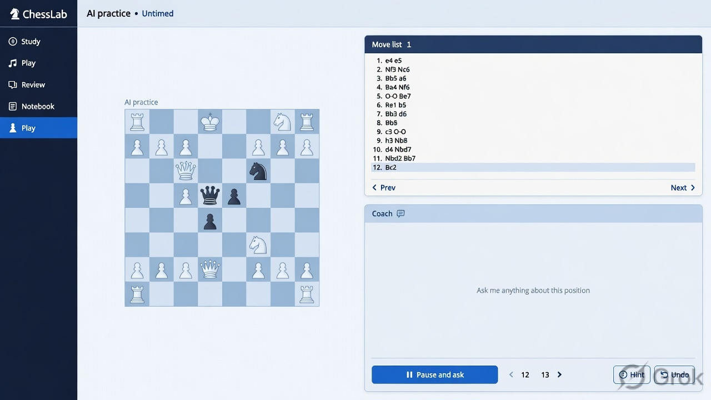

Play · IMAGINE CONCEPT
Play and pause
A proposed part of the ChessLab learning experience.

What this screen must make possible
AI game in progress, blue board left, move list and quiet coach panel right. Primary Pause and ask, optional Hint and Undo. Coach stays quiet until asked. Display AI practice and Untimed. Show move navigation without suggesting assistance during external human games.